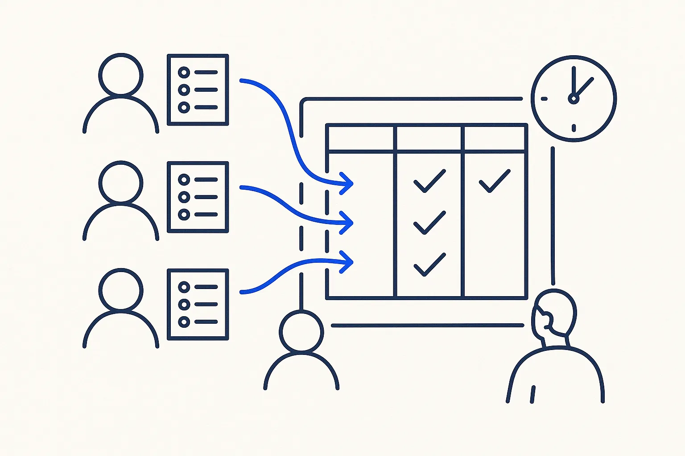

Sample · intermediate
A cockpit for the three lists you check every week
Three lists with one shape, one page that shows them together.

Based on: One cockpit instead of fifteen apps · Level: intermediate · Time: 45 minutes live, or one Build Day afternoon
Steps
- Name the three lists you check every week (open quotes, overdue invoices, to-dos).
- Give them the same small shape: title, status, owner, date.
- Let the AI build one page that shows all three, sorted by date.
- Add one freshness rule: the page says how old each list is.
- Use it for a week before adding anything.
What you take home
A working result on example data, the rules written down, and the list of cases the rules did not cover — the honest next step.